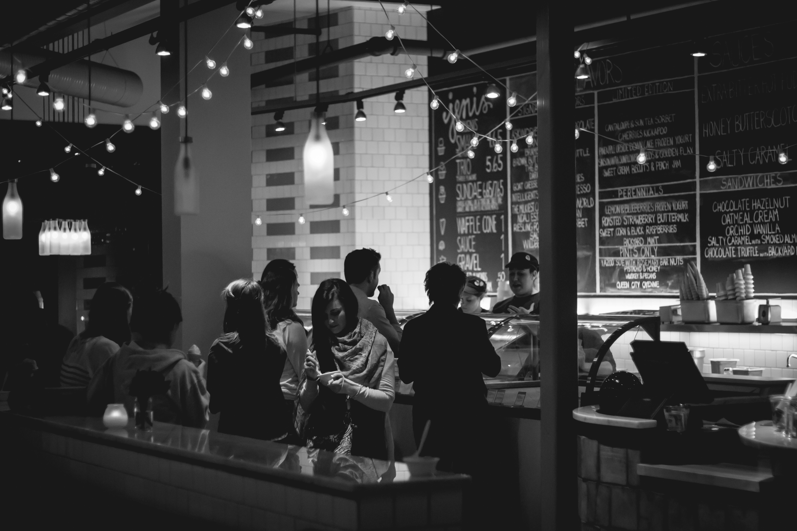
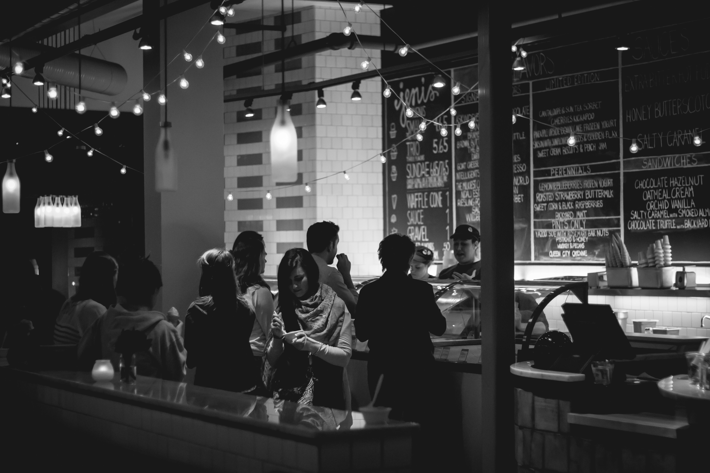

Kai DePaul, Food Stylist & Photography
Kai DePaul is a New York based commercial food stylist and photographer who has worked in the industry for close to a decade. What started out as a weekend hobby quickly turned into a career-changing passion for the self-proclaimed foodie.
Kai's work has appeared almost everywhere you see images of food; from national magazines, cookbooks, packaging, news programs, national publications, food and photography blogs, to TV programs such as Food Network's Good Eats, hosted by Alton Brown.In addition to being known for her photoagraphy, Kia is also well-known for her blog Bokeh & Bite where she documents "all things food photography", shares her own approachable recipes to inspire the at-home chef, reviews restaurants around NYC and her favorite food finds as she travels across the world.
Kai is a "Jill of Trades" who does everything from cooking, to styling, props and photography and approaches each shoot with an authentic, one-of-a-kind, and story-telling style.
 
